Medical Device Product Development
Avery
Murray
Prototyping • Testing • Verification & Validation
Electrical engineering graduate student building practical medical technologies across hardware, software, biomechanics, and data-driven design.
M.S. Electrical Engineering
University of Southern California - Current
B.S. Biomedical Engineering
NC State & UNC-Chapel Hill
Minor: Computer Science
Selected Work
Engineering from clinical need to tested prototype.
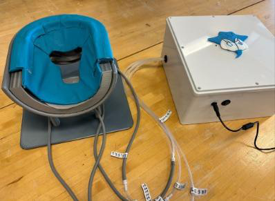
Medical Device · Electromechanical
MANTA PressureWave Facial Support
Four-channel pneumatic pressure modulation for prone surgical positioning.
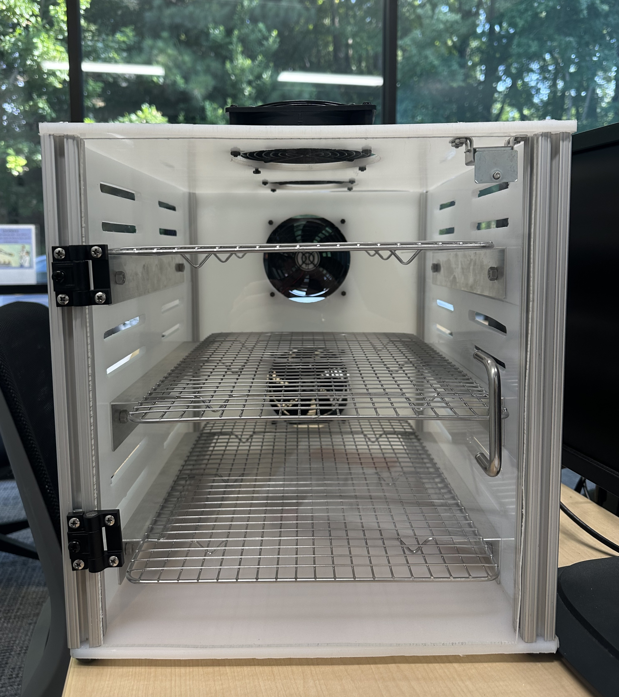
Product Development
SLA 3D-Print Drying Station
75% average reduction in drying time.
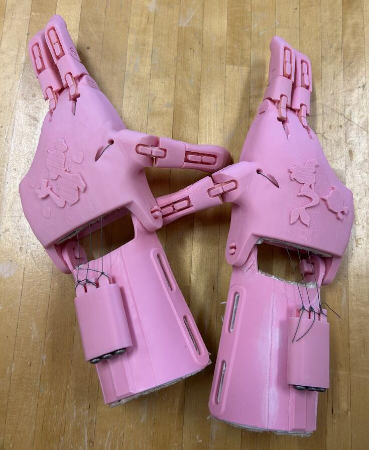
Prosthetics · 3D Printing
Custom Prosthetic Hand
Wrist-flexion-driven finger grasp.
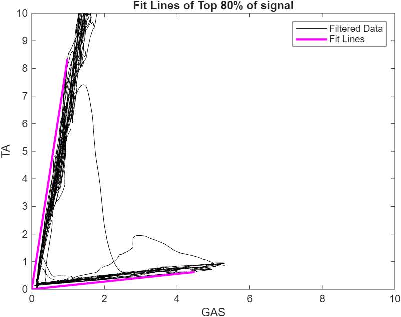
Research · Signal Processing
EMG Calibration Optimization
Automated MVMC selection to reduce subjective calibration.
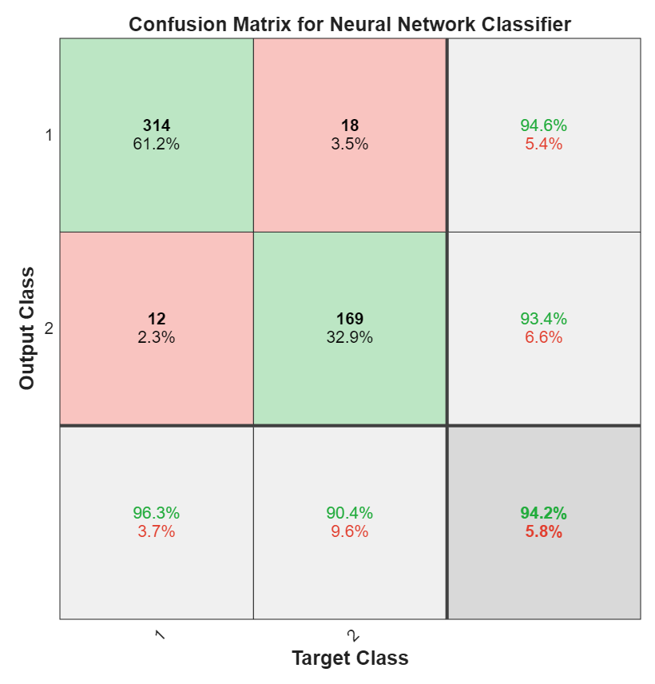
Machine Learning
Classifier & Regression Model Design
Compared classical and neural models on medical datasets.
01 / Flagship Project
MANTA PressureWave Facial Support
Project Manager & Electromechanical Systems Designer · Team of 5 · Concept → Functional Prototype
Develop a pressure-modulating headrest to redistribute facial pressure during prone surgeries.
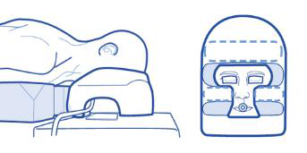
Electromechanical Design
Four independently actuated pneumatic subsystems.
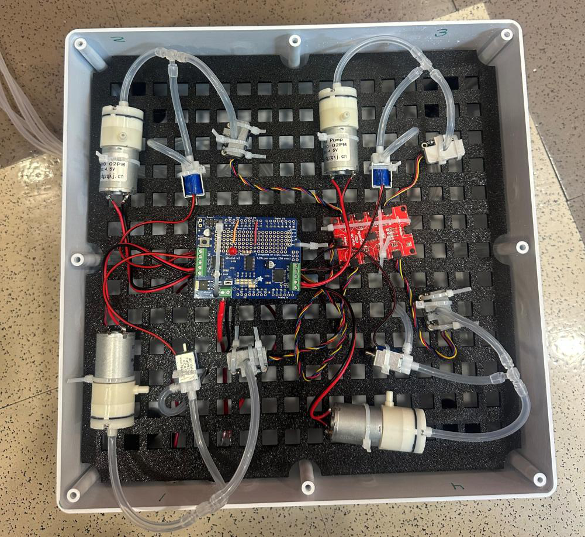
- 4× DC air pumps
- 4× 3/2 solenoid valves
- 4× pressure sensors
- I²C sensor multiplexing
- Motor drivers + microcontroller control
- 5 V, 4 A IEC 60601-1 compliant power supply
Embedded Control · C++
State-based cycling with a continuous high-pressure safety path.
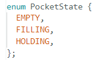
State machine
A custom enum defines EMPTY, FILLING, and HOLDING states for each pneumatic pocket.
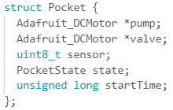
Subsystem abstraction
A pocket struct groups pump, valve, pressure sensor, state, and timing data.
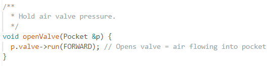
Actuation functions
Custom functions define pump and valve behavior while safety logic checks pressure limits.
Prototype & Testing
Pressure cycling produced the intended alternating load pattern.
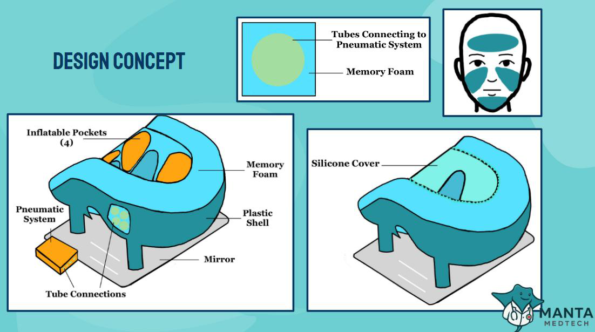
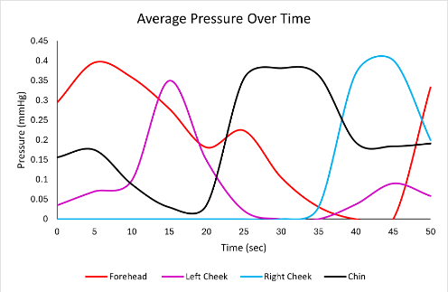
High pressure in one pocket corresponds with reduced pressure in the others, demonstrating effective pressure modulation.
02 / Product Development
SLA 3D-Print Drying Station
Project Manager · Team of 3 · Concept → Functional Product
Problem
Lengthy resin drying created messy, hazardous work areas.
Solution
Ventilated multi-print drying station designed to improve throughput and containment.
My contributions
- Component sourcing
- Task delegation
- Budgeting
- Milled ventilation slots
- Cut and finished enclosure panels
75%average reduction in drying time
03 / Prosthetics
Custom Prosthetic Hand
Project Manager · Team of 7 · Concept → Final Product
Problem
Pediatric prosthetics are costly and require frequent replacement as children grow.
Solution
Custom-sized, 3D-printed prosthetic hand using wrist flexion to actuate finger grasp.
My contributions
- Final design decisions
- Client communication
- Task delegation
- Project scheduling & milestone tracking
04 / Research & Signal Processing
EMG Calibration Optimization for Ankle Prosthesis Control
Independent Project · End-to-End Development · Concept → Final Implementation
Problem
Direct EMG prosthesis calibration relied on manually selected maximum voluntary muscle contraction values from the Tibialis Anterior and Gastrocnemius, introducing subjectivity and repeated recalibration.
Solution
Developed a fitting algorithm that automatically selected MVMC values from the top percentage of EMG contractions.
Reduced subjectivity through automated MVMC selection.
05 / Machine Learning
ML Model Design
Classifier + Regression · Medical datasets
Classifier
Malignant vs. benign biopsy classification
Problem: Classify 513 breast biopsy samples as malignant or benign using six morphological features: radius, texture, perimeter, area, smoothness, and compactness.
Models: Linear Discriminant Analysis, Support Vector Machine, Neural Network.
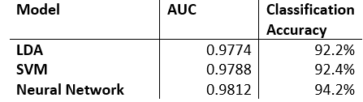
Neural network provided the best class separation: AUC 0.9812 and 94.2% accuracy.
Regression
One-year diabetes progression prediction
Problem: Predict one-year diabetes progression for 400 patients from ten health measurements.
Models: Linear Regression, Bagged Forest Regression, Neural Network Regression.
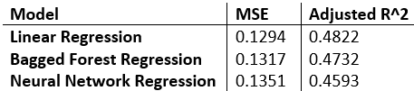
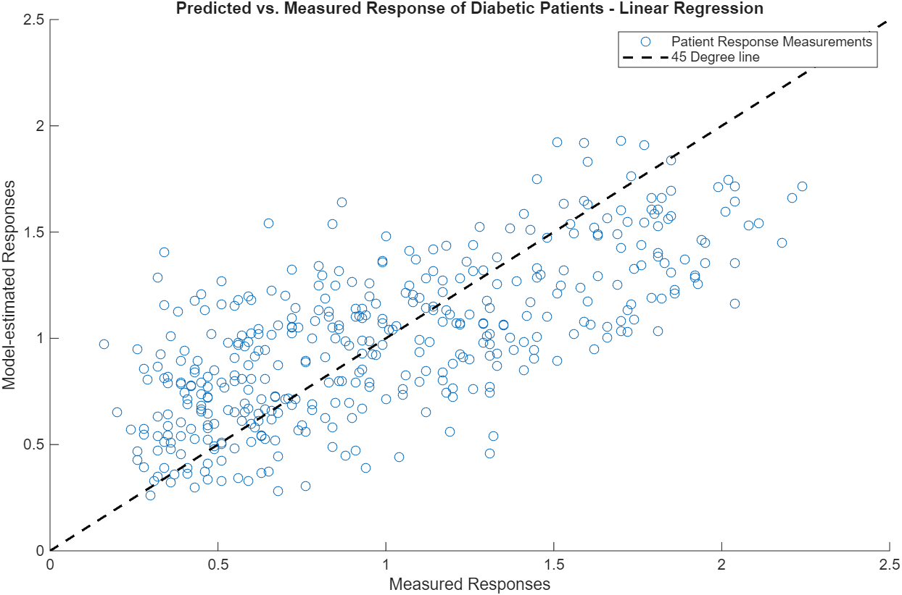
Linear regression produced the lowest MSE and highest adjusted R², outperforming the more complex models.
Engineering Focus